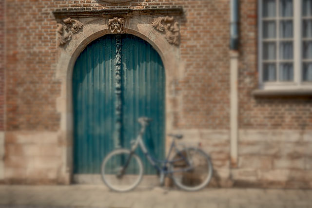
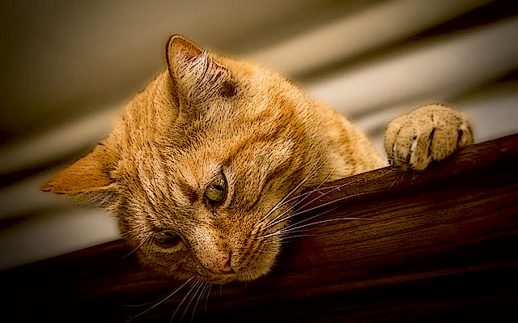
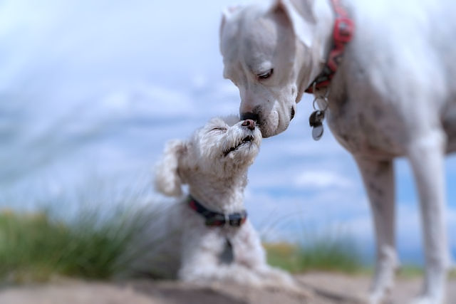
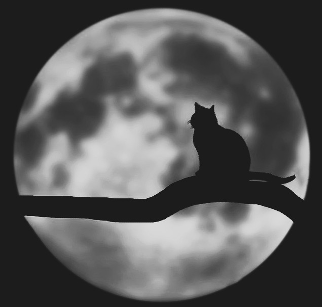

Linked Image

I only changed the brightness
I changed the warmth and exposure

I added blur to focus on the sculpture on top of the doors and changed warmth and exposure

I changed the shadows, applied a cartoon-like filter and applied shadows.

I applied lens blur to focus on dog's heads

I cropped tighter and applied a filter
I only changed the brightness
I cropped and increased exposure.